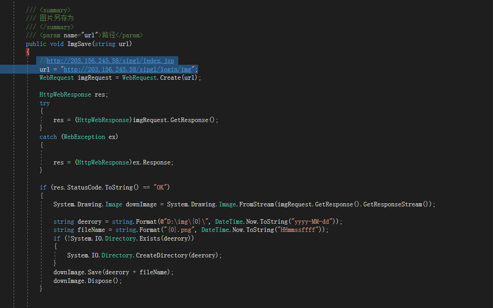
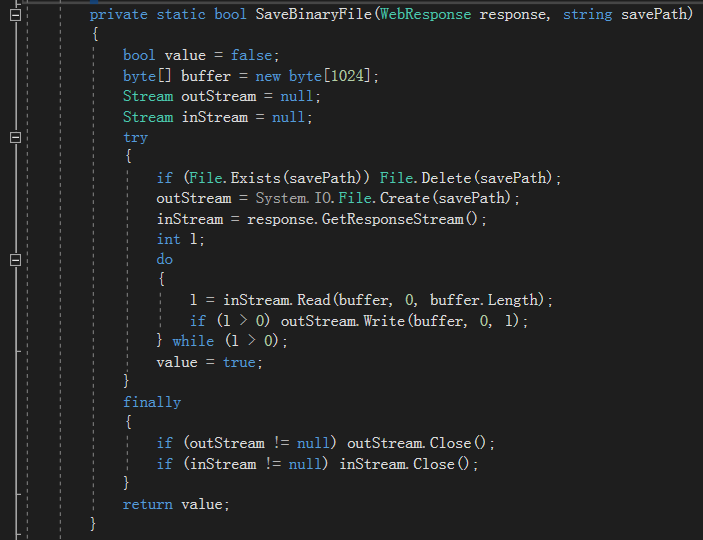

方法一：根据路径下载图片
1 /// <summary>
2 /// 图片另存为
3 /// </summary>
4 /// <param name="url">路径</param>
5 public void ImgSave(string url)
6 {
7 //http://203.156.245.58/sipgl/index.jsp
8 url = "http://203.156.245.58/sipgl/login/img";
9 WebRequest imgRequest = WebRequest.Create(url);
10
11 HttpWebResponse res;
12 try
13 {
14 res = (HttpWebResponse)imgRequest.GetResponse();
15 }
16 catch (WebException ex)
17 {
18
19 res = (HttpWebResponse)ex.Response;
20 }
21
22 if (res.StatusCode.ToString() == "OK")
23 {
24 System.Drawing.Image downImage = System.Drawing.Image.FromStream(imgRequest.GetResponse().GetResponseStream());
25
26 string deerory = string.Format(@"D:\img\{0}\", DateTime.Now.ToString("yyyy-MM-dd"));
27
28 string fileName = string.Format("{0}.png", DateTime.Now.ToString("HHmmssffff"));
29
30
31 if (!System.IO.Directory.Exists(deerory))
32 {
33 System.IO.Directory.CreateDirectory(deerory);
34 }
35 downImage.Save(deerory + fileName);
36 downImage.Dispose();
37 }
38
39 }
40
41

方法二：根据路径下载图片
1 /// <summary>
2 /// 下载图片
3 /// </summary>
4 /// <param name="picUrl">图片Http地址</param>
5 /// <param name="savePath">保存路径</param>
6 /// <param name="timeOut">Request最大请求时间，如果为-1则无限制</param>
7 /// <returns></returns>
8 public bool DownloadPicture(string picUrl, string savePath, int timeOut)
9 {
10 picUrl = "http://203.156.245.58/sipgl/login/img";
11 savePath = "D:/img/"+DateTime.Now.ToString("HHmmssffff")+".jpg";
12 bool value = false;
13 WebResponse response = null;
14 Stream stream = null;
15 try
16 {
17 HttpWebRequest request = (HttpWebRequest)WebRequest.Create(picUrl);
18 if (timeOut != -1) request.Timeout = timeOut;
19 response = request.GetResponse();
20 stream = response.GetResponseStream();
21 if (!response.ContentType.ToLower().StartsWith("text/"))
22 value = SaveBinaryFile(response, savePath);
23 }
24 finally
25 {
26 if (stream != null) stream.Close();
27 if (response != null) response.Close();
28 }
29 return value;
30 }
31 private static bool SaveBinaryFile(WebResponse response, string savePath)
32 {
33 bool value = false;
34 byte[] buffer = new byte[1024];
35 Stream outStream = null;
36 Stream inStream = null;
37 try
38 {
39 if (File.Exists(savePath)) File.Delete(savePath);
40 outStream = System.IO.File.Create(savePath);
41 inStream = response.GetResponseStream();
42 int l;
43 do
44 {
45 l = inStream.Read(buffer, 0, buffer.Length);
46 if (l > 0) outStream.Write(buffer, 0, l);
47 } while (l > 0);
48 value = true;
49 }
50 finally
51 {
52 if (outStream != null) outStream.Close();
53 if (inStream != null) inStream.Close();
54 }
55 return value;
56 }

方法三 根据路径下载图片
1 public Image GetImage(string url,out string imageStrCookie)
2 {
3
4 HttpWebRequest request = (HttpWebRequest)WebRequest.Create("http://203.156.245.58/sipgl/login/img");
5 request.Method = "GET";
6 WebResponse response = request.GetResponse();
7 imageStrCookie = "";
8 if (response.Headers.HasKeys()&&null !=response.Headers["Set-Cookie"])
9 {
10 imageStrCookie= response.Headers.Get("Set-Cookie");
11 }
12 return Image.FromStream(response.GetResponseStream());
13
14 }